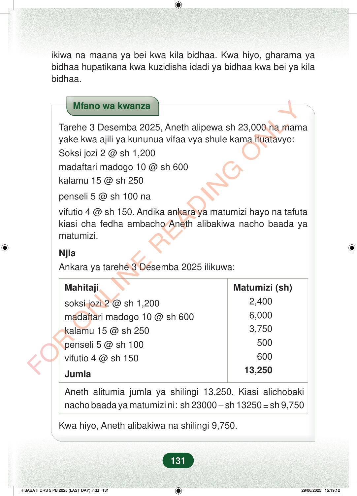

ikiwa na maana ya bei kwa kila bidhaa. Kwa hiyo, gharama yabidhaa hupatikana kwa kuzidisha idadi ya bidhaa kwa bei ya kilabidhaa.Mfano wa kwanzaTarehe 3 Desemba 2025, Aneth alipewa sh 23,000 na mamayake kwa ajili ya kununua vifaa vya shule kama ifuatavyo:Soksi jozi 2 @ sh 1,200madaftari madogo 10 @ sh 600kalamu 15 @ sh 250penseli 5 @ sh 100 navifutio 4 @ sh 150. Andika ankara ya matumizi hayo na tafutakiasi cha fedha ambacho Aneth alibakiwa nacho baada yamatumizi.NjiaAnkara ya tarehe 3 Desemba 2025 ilikuwa:MahitajiMatumizi (sh)soksi jozi 2 @ sh 1,200madaftari madogo 10 @ sh 600kalamu 15 @ sh 250penseli 5 @ sh 100vifutio 4 @ sh 1502,4006,0003,75050060013,250JumlaAneth alitumia jumla ya shilingi 13,250. Kiasi alichobakinacho baada ya matumizi ni: sh 23000−sh 13250=sh 9,750Kwa hiyo, Aneth alibakiwa na shilingi 9,750.131
ikiwa na maana ya bei kwa kila bidhaa. Kwa hiyo, gharama ya bidhaa hupatikana kwa kuzidisha idadi ya bidhaa kwa bei ya kila bidhaa.
Mfano wa kwanza
Tarehe 3 Desemba 2025, Aneth alipewa sh 23,000 na mama yake kwa ajili ya kununua vifaa vya shule kama ifuatavyo: Soksi jozi 2 @ sh 1,200 madaftari madogo 10 @ sh 600 kalamu 15 @ sh 250
penseli 5 @ sh 100 na
vifutio 4 @ sh 150. Andika ankara ya matumizi hayo na tafuta kiasi cha fedha ambacho Aneth alibakiwa nacho baada ya matumizi.
Njia Ankara ya tarehe 3 Desemba 2025 ilikuwa:
Mahitaji
Matumizi (sh)
soksi jozi 2 @ sh 1,200 madaftari madogo 10 @ sh 600 kalamu 15 @ sh 250 penseli 5 @ sh 100 vifutio 4 @ sh 150
2,400 6,000 3,750 500 600 13,250
Jumla
Aneth alitumia jumla ya shilingi 13,250. Kiasi alichobaki nacho baada ya matumizi ni: sh 23000 − sh 13250 = sh 9,750
Kwa hiyo, Aneth alibakiwa na shilingi 9,750.
131
ikiwa na maana ya bei kwa kila bidhaa.Kwa hiyo, gharama ya bidhaa hupatikana kwa kuzidisha idadi ya bidhaa kwa bei ya kila bidhaa.Mfano wa kwanzaTarehe 3 Desemba 2025, Aneth alipewa sh 23,000 na mama yake kwa ajili ya kununua vifaa vya shule kama ifuatavyo:Soksi jozi 2 @ sh 1,200madaftari madogo 10 @ sh 600kalamu 15 @ sh 250penseli 5 @ sh 100 navifutio 4 @ sh 150.Andika ankara ya matumizi hayo na tafuta kiasi cha fedha ambacho Aneth alibakiwa nacho baada ya matumizi.NjiaAnkara ya tarehe 3 Desemba 2025 ilikuwa:MahitajiMatumizi (sh)soksi jozi 2 @ sh 1,2002,400madaftari madogo 10 @ sh 6006,000kalamu 15 @ sh 2503,750penseli 5 @ sh 100500vifutio 4 @ sh 150600Jumla13,250Aneth alitumia jumla ya shilingi 13,250.Kiasi alichobaki nacho baada ya matumizi ni: sh 23000 − sh 13250 = sh 9,750Kwa hiyo, Aneth alibakiwa na shilingi 9,750.